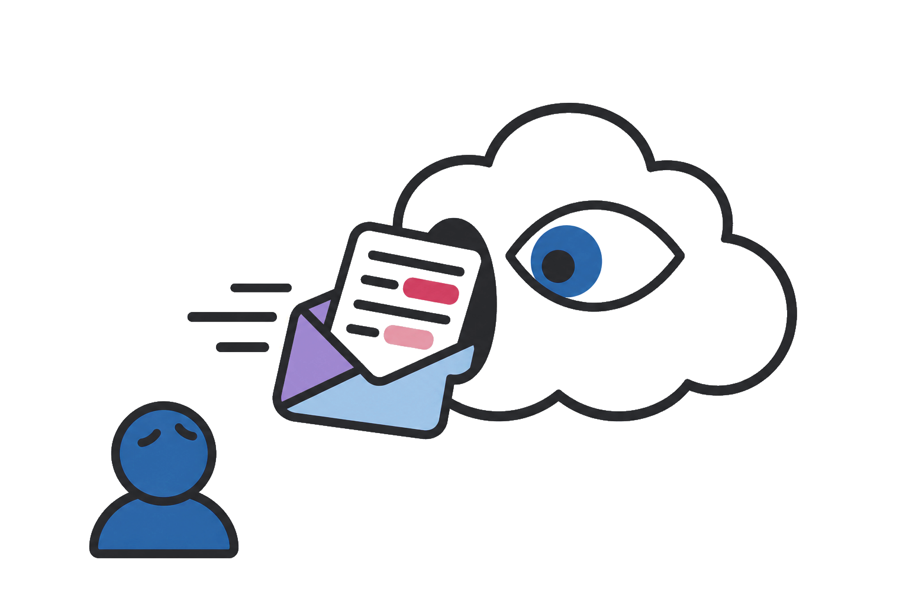

mi chiamo Bruno Ferraguti e sono titolare di una carta di debito collegata al conto IT87L0000085047953541165689. […] ho trovato due addebiti che non ho mai autorizzato: 89,90 euro il 3 novembre 2026 […] In quei giorni ero a Cagliari per lavoro […] Lavoro come tecnico manutentore per Sardelec Impianti […] scrivermi a b.ferraguti@example.net o di chiamarmi al +39 328 664 1027.
Fixture fx-bank-02: every person, account and company in this talk is synthetic.

People paste mail like this into a chatbot to get a reply drafted. The provider, a third party, reads every line.
direct identifierquasi-identifierspecial category